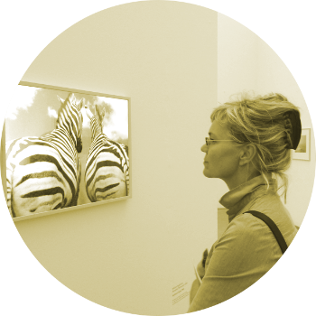

Über michWerdegang:
Seit 1984 begann mein naturheilkundlich geprägter Weg. Als Assistentin bei dem Naturheilarzt Dr. Seemann in Aalen lernte ich damals Bioresonanz, Elektroakupunktur nach Voll (EAV), Farblicht Therapie nach Peter Mandel und weitere alternativ medizinische Verfahren kennen. Nach 4 Jahren führte mein Weg 1988 zur 3 jährigen Ganztags Heilpraktiker Schule nach München. Während dieser Zeit assistierte ich bei dem Naturheilarzt Dr. Sachsse bis 1997. Sein Schwerpunkt war die Bioresonanz, Allergie und seine Testmethode der Pulsreflex nach Nogier, die ich bis heute erfolgreich anwende. Die Einflüsse dieser beiden Ärzte/Mentoren, die bis zu ihrem letzten Atemzug in der Praxis tätig waren, prägen meine Arbeit bis heute. Meine persönlichen Schwerpunkte, die Chinesische Medizin, Psychosomatik und die Alchemia medica/Spagyrik flossen mit in diese Arbeit ein. Letztere ist im tieferen Sinn eine Ordnungstherapie, die wie ein Magnet eine ordnende und ausrichtende Wirkung hat. Doch je weiter ich in das Ursachen-/Wirkungsprinzip eindrang, umso deutlicher wurde meiner Ansicht nach das Psychische, Seelische im Somatischen. Deshalb begann ich 1994 die dreijährige Hakomi-Ausbildung, um ein tieferes Verständnis von unseren Grundanschauungen etc. zu bekommen. Da bei dieser Methode dem Körper so eine besondere Bedeutung zukommt, passt sie sehr gut in meine ganzheitliche Behandlungsmethode.
|
 |